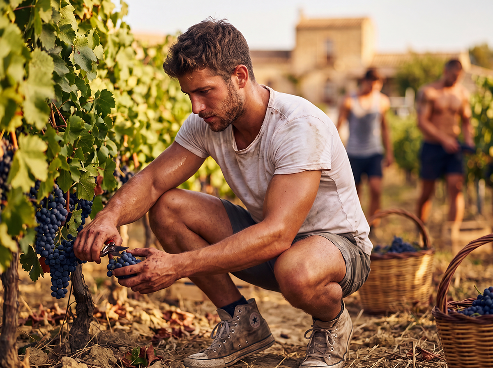

At Baglio San Michele, food autonomy constitutes the first and most important pillar of the intentional community. Producing and processing one’s own food means restoring security, dignity, and rootedness to families in an era when global supply chains are becoming increasingly fragile.
Founding Principles
- • Responsible stewardship of the land as a gift received from the Creator
- • Closing production cycles within the property
- • Integration of crops, livestock, and artisanal processing
- • Intergenerational transmission of rural and artisanal knowledge
- • Active participation of families
- • Time structured according to the liturgical seasons and the blessings of the fields, gardens, and animals
Methods and Operational Practices

Activities are coordinated by the three agricultural and livestock Savi of the Chapter of the Savi and include biodynamic and regenerative agriculture on olive groves, vineyards, and vegetable gardens, traditional pruning, seasonal vegetable production, integrated livestock farming with rotational grazing, and artisanal processing (wood-fired oven, cured meats, cheese making).
Progressive Implementation by Phases
Everything that follows first passes through Phase 0 (September 2026 – March/April 2027), the operational design: agronomic analysis of the land and a permaculture plan, entrusted to professionals, establishing what can actually be grown and raised, and in what order.

Phase 1 (2027-2029) – Autonomy of the Historic Baglio
In the restored fortified farmhouse, basic food autonomy is established for the first residents through collective vegetable gardens, small-scale livestock, and processing workshops. Residents can already rely on a significant production of vegetables, eggs, bread, and cured meats.

Phase 2 (post-2029) – Autonomy of the Entire Property
With the construction of the 20 farmhouses, autonomy is consolidated for the entire community. Each house has its own private plot, and the common lands allow for larger-scale production. Only in this phase is full self-sufficiency achieved for all 34 residential units.
Training and Practical Courses
The Baglio organizes courses and workshops open to residents and candidates:
- • Biodynamic and regenerative agriculture
- • Traditional pruning of olive trees and fruit trees
- • Sustainable farming of poultry, goats, and pigs
- • Sourdough bread making and wood-fired oven baking
- • Traditional charcuterie and meat preservation
- • Seasonal vegetable growing and applied permaculture
Food autonomy is not only production: it is education, relationship with the land, security for families, and the beauty of work well done. It represents one of the most concrete ways to live fidelity to Tradition in our time.